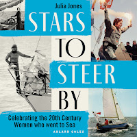
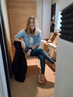
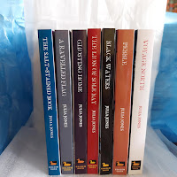

 |
| The Audio Version |
{kind=link}
I began to feel both protective and shy. Stars to Steer By is non-fiction, it’s historical, it’s researched but it’s also, occasionally, personal. My thoughts, my history, my words. I discovered that I wanted to speak them, some of them anyway… the opening for instance: ‘One early evening in August, I looked across St Katherine’s Dock at the yacht Maiden, lying calm and elegant in the gentle sunlight.’ That had been an emotional encounter as well as a significant moment in development of my thinking. I wanted to read it.
Uncommon Courage, my previous book for
Adlard Coles, had clearly needed a male narrator (WW2 war at sea) but I’d been allowed to
top-and-tail it in my own voice. Subsequently my confidence
had been developed in the harder school of writing and narrating a short film, We
Fought Them in Gunboats, for director Tim Curtis. I remember one
particularly bad day when we were about to hit a deadline and I just couldn’t get
the words and inflexions right. Tim got fed up and sent me out for a
walk. I snuck down to the Woodbridge cinema bar and had a bowl of cheesy chips
and the best glass of red wine ever. Back to the studio and the job was done
in a twinkling.
This undertaking would be so much bigger – 120,000 words, 4 days
recording, 30,000 words a day. I don’t have a strong voice, would it hold out?
I’m not a professional, would I bore the listeners with insufficient variety of
tone? And worst of all, would I slip into what the children call my ‘telephone
voice’? (Think old-fashioned BBC Third Programme but not genuine.)
I told Francis and Bertie, but not the wider family, that I was thinking of putting myself forward, I
couldn’t face their potential embarrassment. I also had a stubborn cold so continued
to prevaricate until Kate (lovely desk editor at Adlard Coles) slapped down an
ultimatum. She was about to have a few days off and the audio department needed
to decide who would narrate the book. I blew my nose, sat down on the bed, read
4 ½ minutes of the introduction into my phone and sent it over.
| Lucy Wroe woman of many talents https://www.lucywroe.com/ |
{kind=link}
Stars to Steer By is the story of many people’s
stories: from Anna Brassey circumnavigating the world with her family and staff
in 1876/7 to Vuyisile Jaca, sailing as part of the Maiden team in
2023/4. I quote other women as often as I can. That’s clear enough on the printed
page but how should I make this audible? One way was to emphasise a
characteristic; I annotated my script ‘assertive’, ‘energetic’, ‘angry’,
‘youthful’. I googled accents and begged Lucy to stop me if they sounded naff.
She promised me that she would. ‘If in doubt, always read in your own voice,’
she said.
I searched the internet for recordings of the women I had quoted. It wasn’t an unmixed blessing. I was excited to hear Pamela Bourne Eriksen interviewed on the wreck of Herzogin Cecilie https://www.youtube.com/watch?v=KzoNPPseT3U but if I’d tried to reproduce her high, upper-class 1930s diction it would have sounded like caricature and would have obscured, not clarified, her passionate, determined personality. Or so it seemed to me.
Lucy and I sat in adjacent boxes talking through headphones. There was no outside world, just my voice and the words. I loved the concentration, winced at clumsy sentences and was shocked by the number of errors that had escaped the repeated scrutinies of the copy editor, proof reader, Kate and me. Lucy told me this was normal. She said she can’t understand why the audio narration isn’t done immediately before the text goes to the printer as it’s such a good way of hoovering up the final typos. On my final day in Wardour Studios I met author and podcaster Lucy Meggeson recording her forthcoming book Thrive Solo, a celebration of being single and child-free. She too was loving reading her own words, was shocked by her previously-unspotted typos - particularly when she discovered that she’d written ‘barrister’ for ‘barista’ describing herself during an impecunious period in her life!
 |
| Lucy Meggeson podcaster reading Thrive Solo |
{kind=link}
This meant that I didn’t immediately press DELETE when I recieved message
from Amazon KDP
Congratulations!
You’re invited to participate in KDP's beta for audiobooks. Starting today, you
can now produce audiobook versions of your eligible eBooks using virtual voice
narration and reach new customers by making them available on Amazon, Audible,
and Alexa. Customers have already enjoyed listening to millions of hours of
audiobooks with virtual voice from KDP authors.
Bertie investigated, using A Ravelled Flag (volume2) as sample.
The voices on offer were not too bad at all, he reported back. But did we want to go even further
into the power of Amazon, using robot voices to read stories that are even
more personal and close-to-the heart than my non-fiction books? Lucy described one
way that these AI readers are being trained. Studios are hired, actors
recruited, paid LARGE fees, then set to read strings of words – Wikipedia
entries, for instance – anything not protected by copyright. Despite the fees, many actors are refusing,
knowing that that they are not just doing a day’s work for a day’s pay, but
selling their voices in perpetuity. They will never know what texts their
cloned voices will be used to read.
 |
| The Strong Winds series |
{kind=link}
If a bot read Pebble or A Ravelled Flag more people would potentially be able to enter the world of those stories – which, after all, is not a ‘real’ world. I hope that some people already read the books to each other. I have no control over that. So why is it that I find this third choice so difficult? How has it become an ethical, not a pragmatic issue? All the books are available on Kindle which means basic text-to-speech will already be enabled. Why should people who cannot read print, be expected to remain satisfied with that mechanical device?
I don’t have an answer to that second question but am clearer now about the first. What Lucy and I were doing, in our separate studio boxes, was a creative reinterpretation of Stars to Steer By, if that doesn’t sound too pompous. A 'live' reading is a little like playing a piece of printed music, it's going to be slightly different every time.
At my grand daughter’s christening last weekend I met a couple who only EVER listen to audio books if they are read by the author. ‘We want to trust that they really know what they are saying. With the other narrators, they’re just reading words, aren’t they?’ I was a little startled by this radically purist approach but essentially I had to admit that was why I’d wanted to read Stars for myself and had sent in my initial rather scruffy phone sample. But that could have gone no further without the additional input from Lucy and her colleagues -- which I can't afford for my Golden Duck titles.
I'll have to say no to the KDP offer and wish that all the ingenuity and money that’s being put into cloning voices could instead be poured into human narrators and producers. Then people like my child hero Liam, in Pebble, (or myself and my contemporaries as our aging eyesights fail) wouldn’t be condemned either to exclusion from the printed world, or access by bot.
{kind=link}
Stars to Steer By was published on May 8th 2025. Also available via Audible and Spotify.